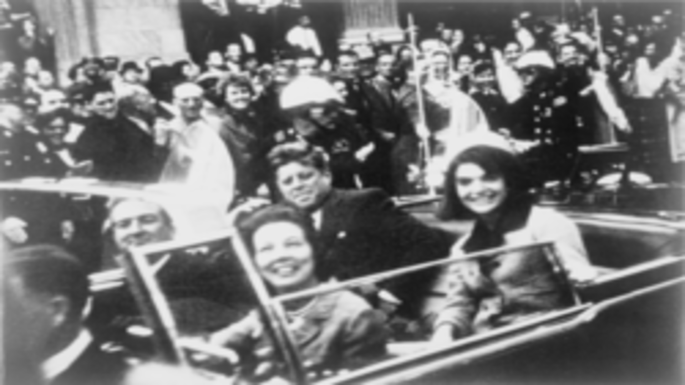
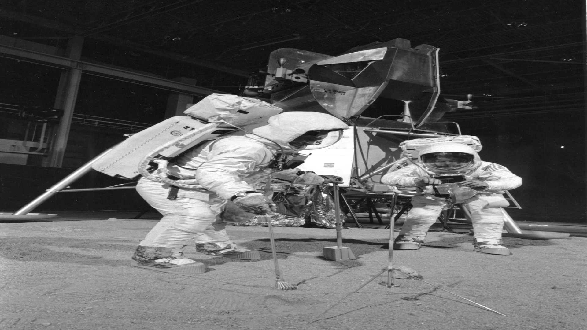

konspirasjonsteori
Konspirasjonsteori er en forklaringsmodell som går ut på at ting som er galt i verden skyldes at mektige grupper i hemmelighet sammensverger seg for å fremme sin egen, skjulte agenda. Gjennom årene så har flere folk kommet opp med flere konspirasjonsteorier siden det er det de tror på. Mange er veldig useriøse men noen har dedikert livene dems til saken. Det finnes tre forskjellige konspirasjonsteorier i følge den amerikanske statsviteren Michael Barkun som er hendelser, systemteorier og superkonspirasjon. Hendelseskonspirasjonsteorier tar oftest utgangspunkt i historiske hendelser, og består av utvalgte fakta og spekulasjoner som til sammen skal bevise at det står en overordnet, ondsinnet konspirasjon bak. Systemkonspirasjonsteorier handler om hvordan ulike samfunnssystem blir undergravet og forsøkt kontrollert av en skjult sammensvergelse. De klassiske systemkonspirasjonsteoriene har tydelig ideologisk innretning som gjør at det vanligvis er de samme som får skylden hver gang. I våre dager kan disse også inngå i superkonspirasjonsteorier, teorier som fusjonerer alle tenkelige konspirasjonsteorier i et gedigent, uoversiktlig komplott.
-

John F.Kennedy
Jhon F.Kennedy ble myrdet 22 november 1963 i Dallas, Texas. Mange har akseptert at han ble drept men mange har kommet med at CIA har drept han og det var en del av en plan. Eller at han ble drept av mafia og mange andre grupper. Disse konspirasjonsteoriene er ikke bekreftet men folk tenker på det fortsatt.
-

Måne landing
Månelanding har blitt snakket my om fra når det først skjedde og til idag. Flere mennesker har prøvd å motbevise dette ved å vise bilder som er forfalsket men de personlig tror på, folk har rett til å tenke det de vil, men det har kommet bevis som motbeviser denne konspirasjonsteorien flere tusenvis av ganger.